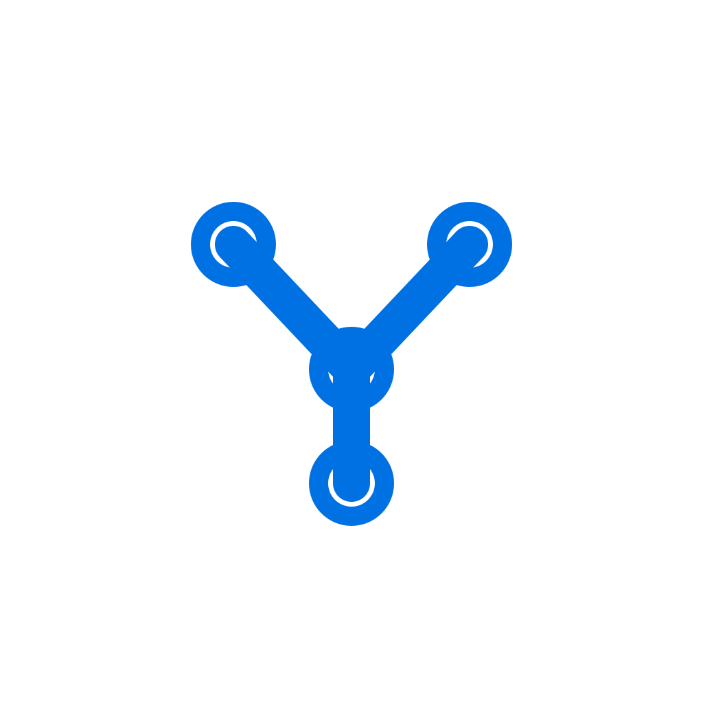

YAAW
Explore workflow stages and skills before you execute work.
Hover a stage to preview details. Click to pin a stage on touch devices.

Explore workflow stages and skills before you execute work.
Hover a stage to preview details. Click to pin a stage on touch devices.